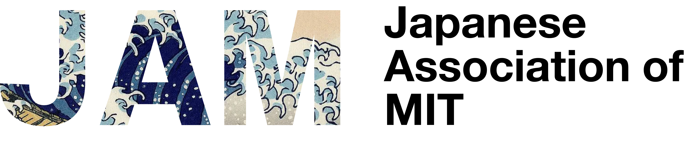

Hanami Festival
Cherry-blossom season gathering with food, tea, calligraphy, shogi, origami, and Japanese cultural booths.

Japanese Association of MIT
JAM brings students, researchers, alumni, and friends together through cultural events, food, language, and everyday community.

Thanks to everyone who joined Hanami Festival 2026 at Walker Memorial.
About
Japanese Association of MIT is a student-run community for people interested in Japan, Japanese culture, and Japanese-speaking life around MIT.
We host cultural gatherings, seasonal celebrations, casual meetups, and collaborations with other student groups and local partners.
Events
Cherry-blossom season gathering with food, tea, calligraphy, shogi, origami, and Japanese cultural booths.
Low-pressure meetups for new and returning members, often centered on conversation, snacks, and seasonal traditions.
Events with MIT groups and Boston-area communities that share Japanese arts, language, food, film, and games.
Join
Join the mailing list to hear about upcoming events, volunteer opportunities, and community announcements.
Manage jam-all on WebMoiraContact